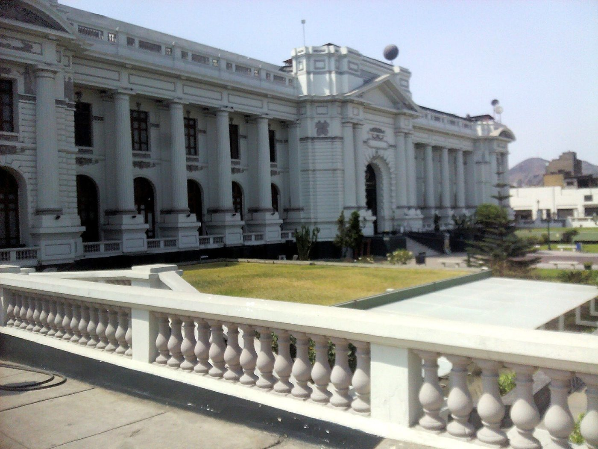

01 · Derechos e igualdad
Una voz por los derechos de la persona
Promovemos el reconocimiento y el respeto de los derechos de la persona, la eliminación de toda forma de discriminación por razón de nacimiento, sexo, raza, idioma o religión, y la igualdad de derechos y responsabilidades entre el hombre y la mujer. Unimos esfuerzos para desterrar toda forma de violencia contra la mujer y el menor.